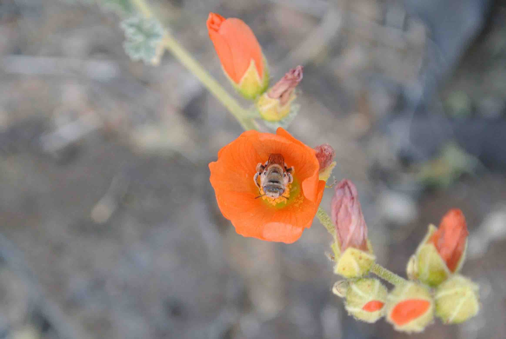
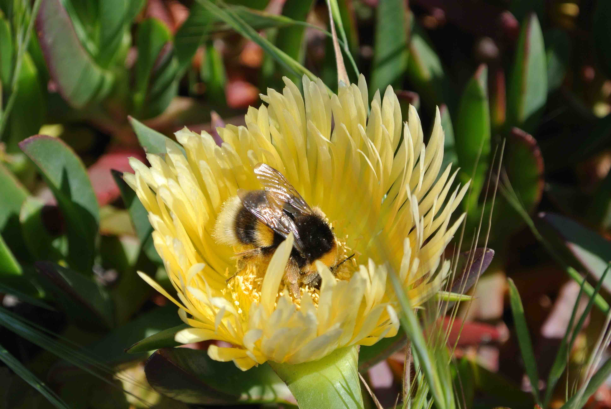
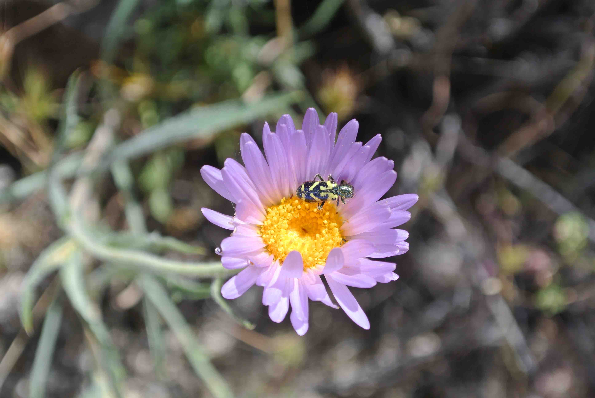

<body>
<br>
	<h1>Publications</h1>
	<a href="../img/globemallow.JPG" target="_blank"></a>
	<a href="../img/bumblebee.JPG" target="_blank"></a>
	<a href="../img/mojaveaster.JPG" target="_blank"></a>
<p style="clear: both;">
<script language="javascript">
src="../imageLoad.js"
</script>
</body>
  	<p><small>
  		1. <b>Baughman, Jenna T.</b>; Fisher, Kirsten M. Photosynthesis through quartz: Hypolithic mosses in the Mojave Desert. (In prep).<br>
  		<br>
		2. <b>Baughman, Jenna T.</b>; Payton, Adam C.; Paasch, Amber E.; Fisher, Kirsten M.; McDaniel, Stuart F. Multiple factors influence population sex ratios in the Mojave Desert moss <i>Syntrichia caninervis</i>. <i>American Journal of Botany</i> 104(5):1-10 (2017), DOI: 10.3732/ajb.1700045<br>
		<br>
		3. Meijome, Tomás E.*; <b>Baughman, Jenna T.</b>*; Hooker, R. Adam; Cheng, Ying-Hua; Ciovacco, Wendy A.; Balamohan, Sanjeev A.; Srinivasan, Trishya L.; Chitteti, Brahmananda R.; Eleniste, Pierre P.; Horowitz, Mark C.; Srour, Edward F.; Bruzzaniti, Angela; Fuchs, Robyn K.; Kacena, Melissa A. C-Mpl is expressed on osteoblasts and osteoclasts and is important in regulating skeletal homeostasis. <i>Journal of Cellular Biochemistry</i> 117:959-969 (2016), DOI: 10.1002/jcb.25380 *Contributed equally<br>
		<br>
		4. Eleniste, Pierre P.; Patel, Vruti; Posritong, Sumana; Zero, Odette; Largura, Heather; Cheng, Ying- Hua; Himes, Evan R.; Hamilton, Matthew; <b>Baughman, Jenna</b>; Kacena, Melissa A.; Bruzzaniti, Angela. Pyk2 and megakaryocytes regulate osteoblast differentiation and migration via distinct and overlapping mechanisms. <i>Journal of Cellular Biochemistry</i> 9999:1-11 (2015), DOI: 10.1002/jcb.25430</small></p>
</div><!-- /.blurb -->


